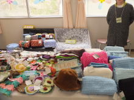
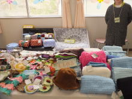

このような目標を持って、グループでの活動を行っているところです。
| 活動名 | デイ・ケア | ナイト・ケア | デイ・ナイト・ケア | ショート・ケア |
|---|---|---|---|---|
| 曜日 | 月曜日～金曜日 | 月曜日～金曜日 | 月曜日～金曜日 | 月曜日～金曜日 |
| 時間 | 9：00～15：00 | 16：00～20：00 | 9：00～20：00 | 9：00～12：00 |
| デイ・ケアプログラム | |||||
|---|---|---|---|---|---|
| スポーツ | 書道 | 音楽 | 調理 | 園芸 | カラオケ |
| ビデオ観賞 | 美術 | 院外活動 | 創作 | 趣味活動 | 院内喫茶 |
| ナイト・ケアプログラム | |||||
|---|---|---|---|---|---|
| スポーツ | 調理 | カラオケ | ビデオ観賞 | 創作 | 趣味活動 |
| デイ・ケア | ナイト・ケアプログラム | ||
|---|---|---|---|
| 時間 | 内容 | 時間 | 内容 |
| 9：00 | ミーティング | 16：00 | ミーティング |
| 9：30 | プログラム活動 | 16：30 | プログラム活動 |
| 11：45 | 昼食 | 18：00 | 夕食 |
| 13：15 | プログラム活動 | 19：00 | プログラム活動 |
| 14：40 | 反省会 | 19：30 | 反省会 |
| 15：00 | 終了 | 20：00 | 終了 |
など
ショート・ケア、デイ・ケア、ナイト・ケアは「診療」の一環で、主治医の処方箋が必要です。従って診察や薬と同様に医療費がかかります。
参加料は各種健康保険や生活保護が適用されます。自立支援医療制度を申請すると、原則1割負担となります。所得等により月額限度が変わります。申請の手続きに関するお問い合わせは、受付窓口、医療相談室、スタッフまでにご相談ください。
上段が午前、下段が午後のプログラムです。
参加申し込みは、電話でお問い合わせいただくか、受付窓口にお申し出ください。
平成25年11月15日（金） 第17回デイケア祭を開催しました。
今年のテーマは「ファンタジー」でした。今年もテーマに沿って、不思議な木や“くもすけ”というキャラクターを作りました。
メンバーさんが協力して作り上げた空間は、まるで不思議な国に迷い込んだようで、お客様にも大好評でした。また、ゲームコーナーのスタッフやメンバーは仮装をして、皆さんに楽しんでいただきました。 毎年恒例の手作りクッキーは完売し、メンバーが作った作品もたくさん販売しました。
また、今年もナイトケアやデイケアＲｅ－ＣＵＲＥ（りくれ）、メープルガーデンにも出店協力していただき、より一層賑やかなデイケア祭となりました。
ご来場いただいた皆様、協力していただいた関係者の皆様、ありがとうございました。
作業療法士 大内
 

6月18日、多賀城跡あやめ園に行ってきました。「花より団子だったかな？」
4月15日、塩竈神社でお花見をしました。少し肌寒く、花も咲き始めたばかりで物足りない感じでしたが、散策したり売店でお団子などを買ったり、楽しい一日を過ごしました。